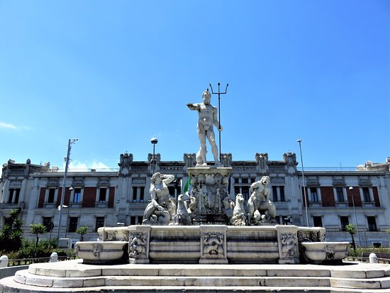

Una bellissima piazza a Messina sita sul lungomare della città è la Piazza dell’Unità d’Italia.
In essa, posta al centro, si trova la Fontana del Nettuno, un’opera di Giovanni Angelo Montorsoli del 1557, che dovrebbe raffigurare Nettuno dopo aver fatto prigionieri i mostri Scilla e Cariddi, annuncia al popolo messinese di aver messo fine ai tormentati flutti dello Stretto, ma impropriamente la statua raffigura semplicemente il dio che fa ritorno nel suo regno.
Inoltre nella possiamo ammirare lo stupendo Palazzo della Prefettura costruito nel 1920 che domina tutta la piazza.

